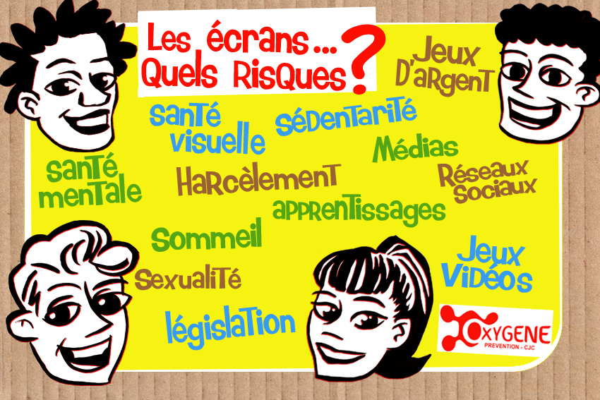

Composée de professionnels formés à la question des addictions, mais aussi à la prise en charge spécifique des
adolescents, les objectifs de la CJC sont d’informer, de prévenir, de dépister et de prendre en charge de manière
précoce les vulnérabilités ou les pratiques addictives.
Au sein de la CJC, nous vous proposons :
- D'évaluer vos conduites
- De vous informer
- De vous offrir un soutien personnalisé
- De vous orienter si besoin
Les missions des consultations jeunes consommateurs (CJC) telles que prévue dans l’annexe 4 de la circulaire
n°DGS/MC2/2008/79 du 28/02/2008 relative à la mise en place des centres de soins, d’accompagnement et de
prévention en addictologie (CSAPA) et à la mise en place des schémas régionnaux médico-sociaux d’addictologie. Les
consulations doivent assurer : acceuil, information, évaluation, prise en charge brève et orientation si
necessaire:
- Réaliser une évaluation de la situtaion médico-psycho-sociale du consommateur et repérer un eventuel usage
nocif
- Offrir une information et un conseil personalisé, une prise en charge brève, aux consommateurs a risque ou
nocifs selon leurs besoins
- Accompagner ou proposer une orientation des personnes en difficultés lorsque la situation le justifie
(complication somatique ou psychiatrique,dépendance,prise en charge au long cours etc....)
- Offrir et proposer un accueil et des informations à aux conjoints et à son entourage
- Aller à la rencontre des personnes en difficulté potentielles et se faire connaitre des partenaires et
institutions telles que : Education Nationale, Education spécialisée, professionnels de santé locaux...
- Recevoir les personnes orientées par l’autorité judiciaire
- Participer à des actions d’information et de prévention collective et les mettre en oeuvre

“Un espace d’écoute de soutien et de réflexion est également proposé votre entourage : parents, conjoint, famille, amis”
Il est scientifiquement établi qu'à l’adolescence, les zones du cerveau associées aux réactions émotionnelles et
aux systèmes de récompense se développent avant celles associées au fonctionnement exécutif, au jugement et à la
prise de
décision.
Cette maturation inégale entre certaines parties du cerveau accroît la prédisposition à adopter des comportements
impulsifs et à risque chez l'adolescent, y compris la consommation de substances psychoactives. Elle accroît
aussi la vulnérabilité aux effets de renforcement et de récompense des substances. Prévenir ou retarder la
première expérimentation des produits psychoactifs chez les jeunes peut donc réduire plus tard le risque de
consommation abusive et les
troubles qui lui sont liés.
Au sens large, l’adolescence reste une étape de "découvertes" et d’"expérimentations" des relations sociales, de
l’intellect et des émotions. C'est une période que la consommation de substances psychoactives peut
accentuer par ses apports immédiats : expérience de ses propres limites, valorisation auprès de pairs,
augmentation des capacités physiques, désinhibitions. La majorité des jeunes que nous accueillons dans les locaux
de la CJC-OXYGÈNE ou dans
les consultations avancées en milieu scolaire étant mineurs, l'adhésion de la famille et particulièrement celle de
le/la représentant/te légale est systématiquement recherchée si la situation l'exige. Écouter et soutenir les
proches d'un jeune dans leurs difficultés face aux consommations ou aux conduites addictives de leur enfant fait
partie du processus de prise en charge en cas d'usage nocif de produits psychoactifs.
Très souvent les liens avec l'entourage constituent une composante importante dans la première expérimentation,
le maintien, l'aggravation ou la résolution de l'addiction du jeune. D'où l'intérêt de soutenir les parents dans leur rôle éducatif et le dialogue avec leur enfant sur leurs consommations de produits psychoactifs
ou leurs addictions sans produits.